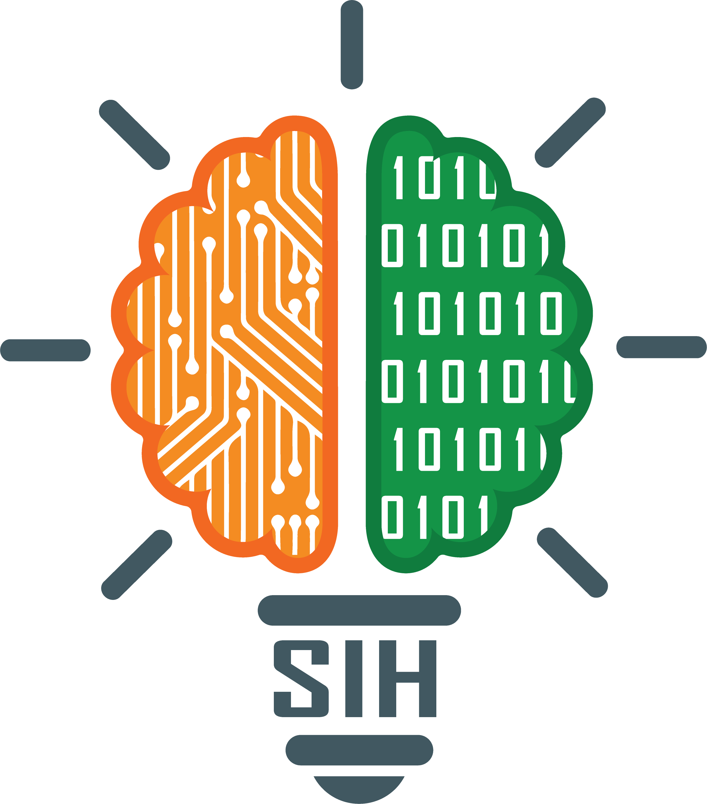
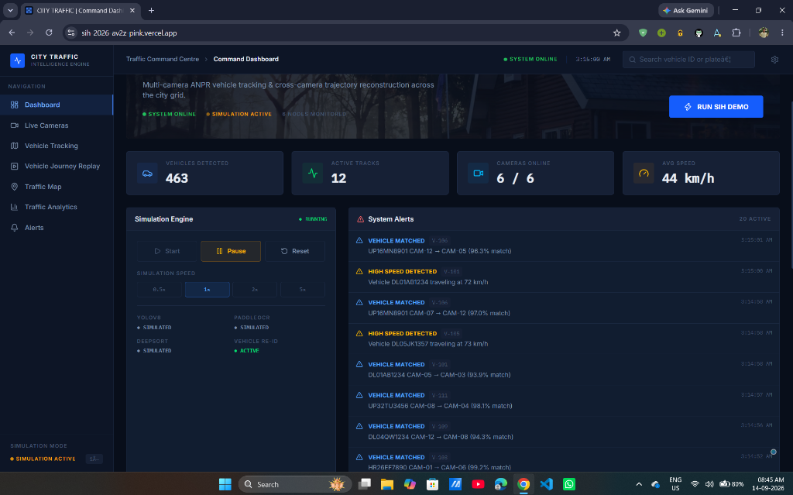
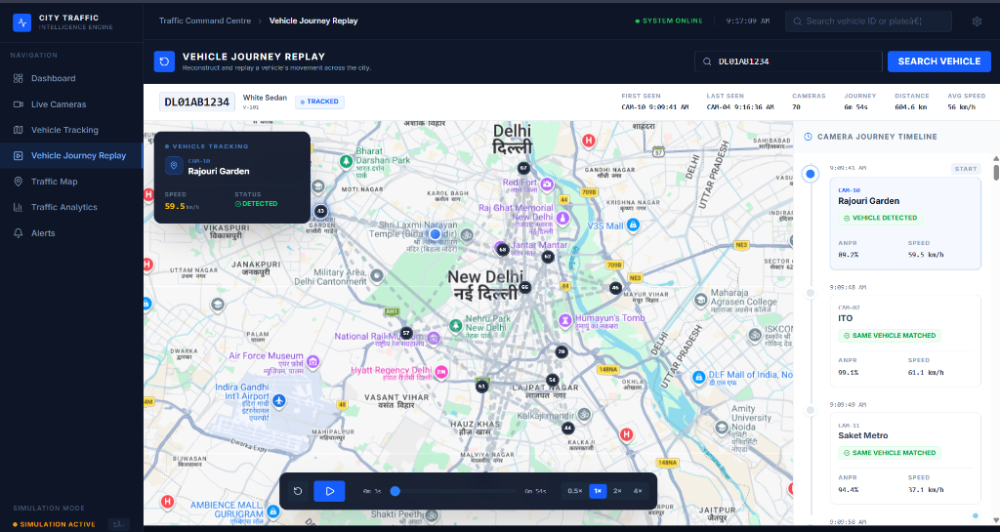
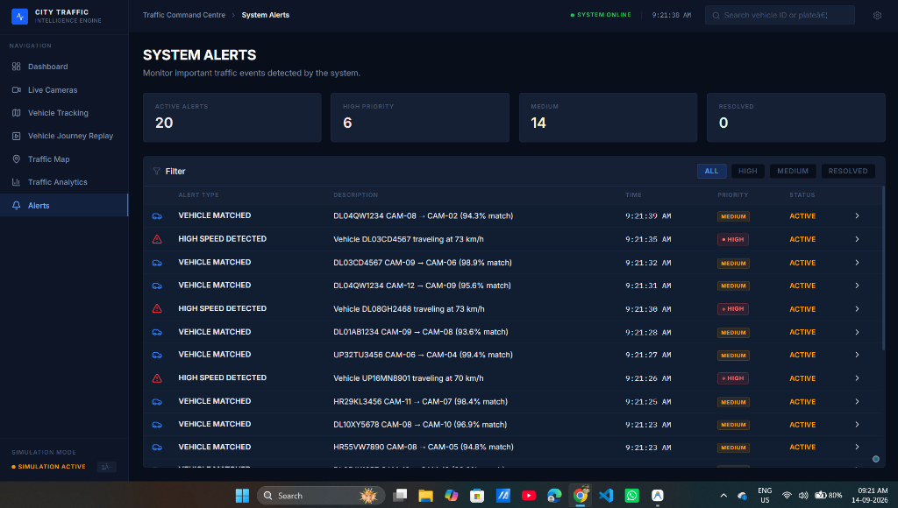
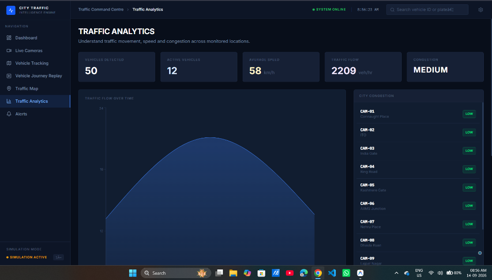

Smart India Hackathon 2026 — Complete Study Guide
We built an AI-powered command center that connects all city cameras into one smart network. Instead of humans watching screens, AI does the heavy lifting.



